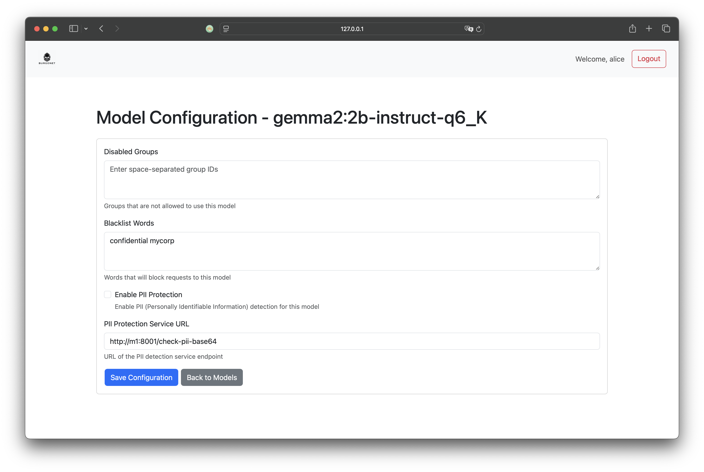

Walk the talk

Log example
{
"time_local": "14/Jan/2025:11:06:14 +0000",
"remote_addr": "192.168.65.1",
"remote_user": "",
"request": "POST /api.deepseek.com/v3/chat/completions HTTP/1.1",
"status": "200",
"body_bytes_sent": "440",
"request_time": "1.977",
"http_referrer": "",
"http_user_agent": "curl/8.7.1",
"http_x_forwarded_for": "",
"host": "localhost",
"authorization": "Bearer your-token-here",
"upstream_addr": "104.18.27.90:443",
"request_method": "POST",
"http_version": "HTTP/1.1",
"request_body": "{\n \"model\": \"deepseek-chat\",\n \"messages\": [\n {\"role\": \"system\", \"content\": \"You are a helpful assistant.\"},\n {\"role\": \"user\", \"content\": \"Hello\"}\n ],\n \"stream\": false\n }",
"response_body": "{\"id\":\"08118b43-3ec7-4691-b3c9-91bb5e1cbe23\",\"object\":\"chat.completion\",\"created\":1736852773,\"model\":\"deepseek-chat\",\"choices\":[{\"index\":0,\"message\":{\"role\":\"assistant\",\"content\":\"Hello! How can I assist you today? 😊\"},\"logprobs\":null,\"finish_reason\":\"stop\"}],\"usage\":{\"prompt_tokens\":10,\"completion_tokens\":11,\"total_tokens\":21,\"prompt_cache_hit_tokens\":0,\"prompt_cache_miss_tokens\":10},\"system_fingerprint\":\"fp_3a5770e1b4\"}",
"provider": "deepseek",
"model_name": "deepseek",
"model_version": "v3"
}